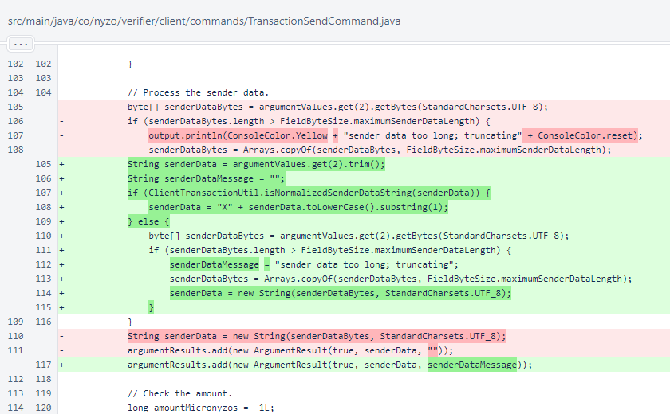
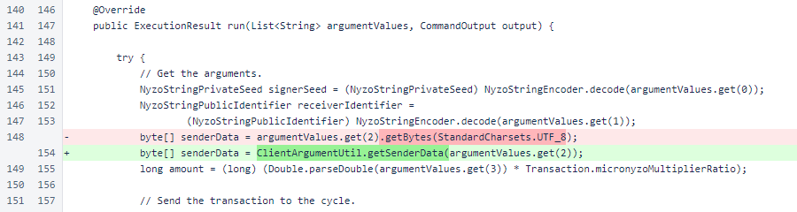

Nyzo 637: transaction send command binary sender data
Nyzo version 637
(commit on GitHub) adds support for binary sender data in the
TransactionSendCommand.
This version affects the client.
We initially intended for this version to include the nickname script.
However, in sending the
transaction to
establish the nickname script account, we realized that support for binary sender data was still needed in
the TransactionSendCommand. This version corrects that deficiency.
In TransactionSendCommand.validate(), the
ClientTransactionUtil.isNormalizedSenderDataString()
method is now used to detect and pass through
normalized sender-data strings. Text sender data is processed
as it was previously, and the truncation message is now passed to the argument result.

In TransactionSendCommand.run(), the
ClientArgumentUtil.getSenderData() method is now used to
process the sender-data argument.
